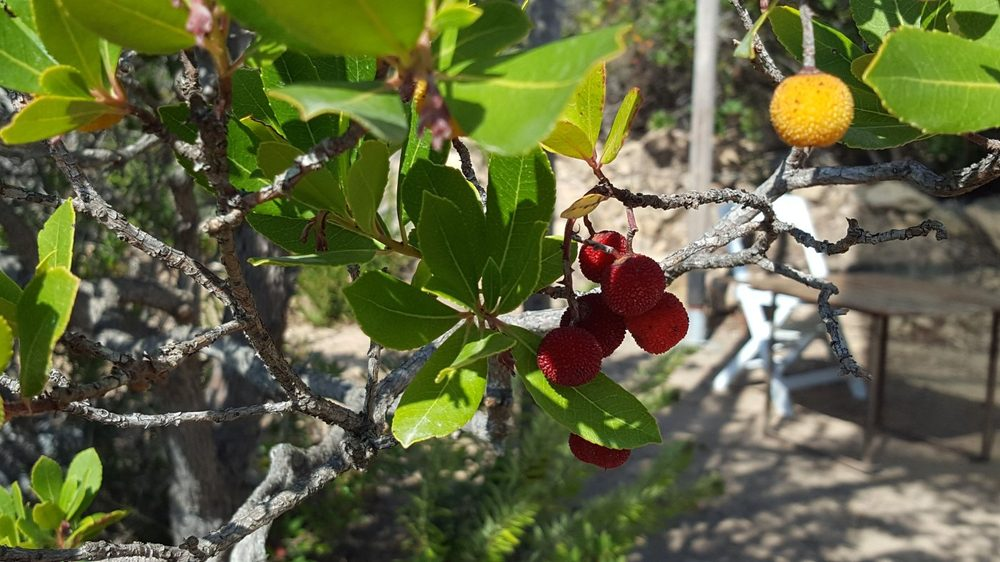

«Oggi io appartengo a questa terra e non la cambierei con nessun altro luogo al mondo.»
Dopo una laurea in psicologia a Padova e qualche viaggio per il mondo, ho cambiato venti case in cinque regioni diverse prima di decidere di fermarmi su questa terra. È stata una scelta difficile, e negli anni — sono ormai passati oltre diciassette anni dal primo giorno — ancora più faticosa.
Su questa terra non c'era l'acqua ed abbiamo dovuto scavare un pozzo; non c'era la corrente elettrica ed abbiamo messo i pannelli solari sia per la luce che per la pompa dell'acqua. Quando la casa era troppo calda per poterci dormire all'interno, mi sono trasferita sotto un grande cespuglio ed ho costruito il mio bagno e la mia doccia tra i cespugli di corbezzoli.
«Ho piantato 110 ulivi ed alberi di limoni, mandarini e melograno. Ho continuato a costruire e progettare spazi nuovi: non ultima, una casa d'argilla.»
Nel tempo qualcuno si è fermato per un giorno, altri per una settimana, qualcuno per un mese ed altri ancora per qualche anno. Ognuno di loro ha lasciato una piccola impronta, contribuito alla realizzazione di un progetto, lasciato un po' di sé. Sono cresciuti qui cani e gatti, galline e tartarughe, e i nostri asinelli Rino e Macco.
Oggi chi arriva a Località Cicillanu può trovare un luogo per organizzare cene, compleanni e feste, oppure arrivarci per caso e trovare la compagnia giusta: quella che ti rende la giornata diversa e speciale.
Monica Zago
Un Pugno di Terra · San Vito – Muravera

I corbezzoli della tenuta in autunno, tra cui Monica ha costruito la doccia a cielo aperto e la Casetta di Argilla.
20+ anni
Di vita e custodia quotidiana della terra nel Sarrabus
110 Ulivi
Piantati insieme a limoni, mandarini, melograni ed erbe
100% Solare
Autosufficienza energetica e acqua pura del nostro pozzo
19 Oli Puri
Distillati dalle piante officinali spontanee e coltivate
Dal diario di Monica · «Un Taxi a Torino»
«Grazie a Te che ieri sera con il tuo taxi mi hai riaccompagnato a casa tra le strade di una città deserta. Mi hai ascoltato, ti sei incuriosito e mi hai chiesto della mia vita, di questo luogo e dei miei asinelli. Sono tornata a casa con il cuore più leggero. Sappi che se arriverai fino a Cicillanu… Un pugno di terra ti aspetta e la pizza è pagata.»